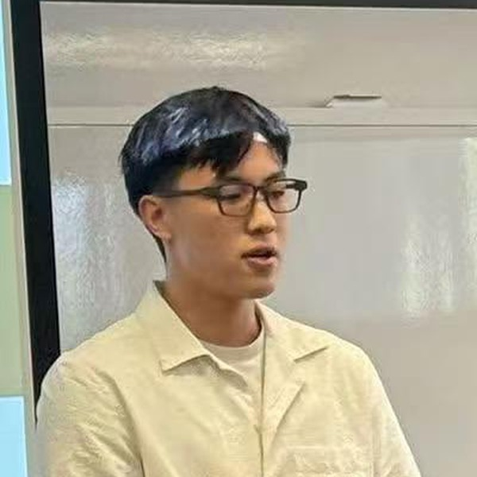

A founder, and still a student.
A screen was the beginning.
I grew up in Hong Kong. As a teenager, I began developing Eazeye, exploring how ambient light could be used in a computer display. What started as a product idea became my first experience of building a company.
Working on physical products means working through the details: a prototype, a supplier conversation, a design revision, and the experience of the person who eventually uses it. Those details continue to shape my work.
Two kinds of classroom.
I’m now studying Business Administration at Babson College, class of 2028, and taking coursework at Olin College of Engineering. My education moves between entrepreneurship, technical experimentation, and the practical work of running projects.
Still following the questions.
Alongside Eazeye, I founded LaunchMaxx and work on ArduView. I’m also exploring hands-on AI systems, from engineering assistants to workflows that connect product ideas with CAD and rendering.
This site is a snapshot of that journey. There’s more to figure out, and more to build.
See what I’m working on ↗